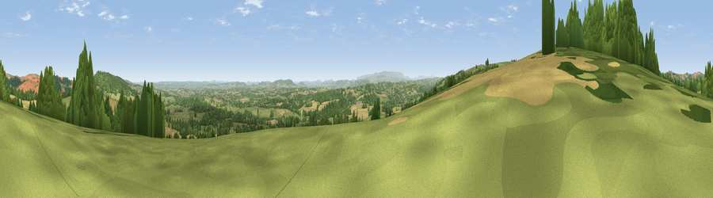

Viewpoint near Titley
#4216 in England · top 10% of its area beats it · near TitleyWhere it is
The exact computed spot (SO 31800 60150). Click the marker for map links.
The view, rendered

A 360° render of this exact spot computed from the terrain model, tree cover and land cover — summer colours, afternoon light, calibrated against photographs of famous viewpoints. Real trees, hedges and buildings will differ in detail.
The panorama
Grey silhouette: terrain skyline in each direction (720 bearings, Earth curvature and refraction included). Dashed green: skyline with trees (+15 m) and buildings (+8 m) as obstacles. Blue strip: how far the ground is visible on each bearing.
Where the view opens
Wedge length = distance to the farthest visible ground on that bearing (vegetation-aware). Rings at 10, 25 and 50 km.
What fills the view
48% grassland · 28% woodland · 22% cropland · 1% water ·
Angular shares of the visible panorama (visual magnitude), not map area. Landscape diversity 0.49 (0–1 Shannon).
Key numbers
More beautiful places nearby
The staircase of upgrades: each row has a higher view potential than everything closer. Driving times are estimates from straight-line distance, calibrated against real road routing — check an actual route before setting out.
| Place | Direction | Drive | Score |
|---|---|---|---|
| Viewpoint near Kington | WSW · 2 km | ~5 min | 74.9 |
| Rushock Hill | W · 3 km | ~7 min | 80.2 |
| Viewpoint near Leinthall Starkes | NE · 15 km | ~27 min | 80.3 |
| Merbach Hill | S · 15 km | ~28 min | 81.1 |
| Gatley Hill | NE · 16 km | ~28 min | 82.6 |
| Viewpoint near Asterton | NNE · 30 km | ~46 min | 83.0 |
| Titterstone Clee | NE · 33 km | ~50 min | 83.8 |
| Garway Hill | SSE · 37 km | ~56 min | 84.6 |
52.23530, -3.00008 · source: screening · position refined by local search. Computed location — check access rights before visiting.